Selected results
In the 3D camera motion plots below (middle column), the training camera positions are marked in red while the novel-view camera position is marked in green.
The recovered results (right column) only show novel viewpoints. The camera position plot is synchronized with the GIF motion.
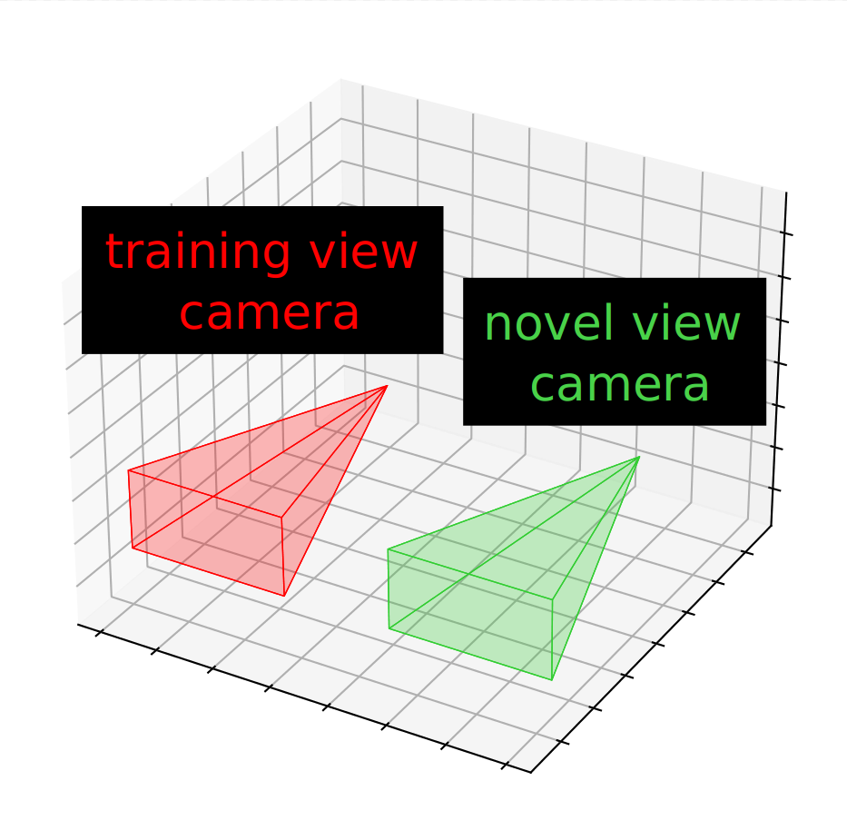
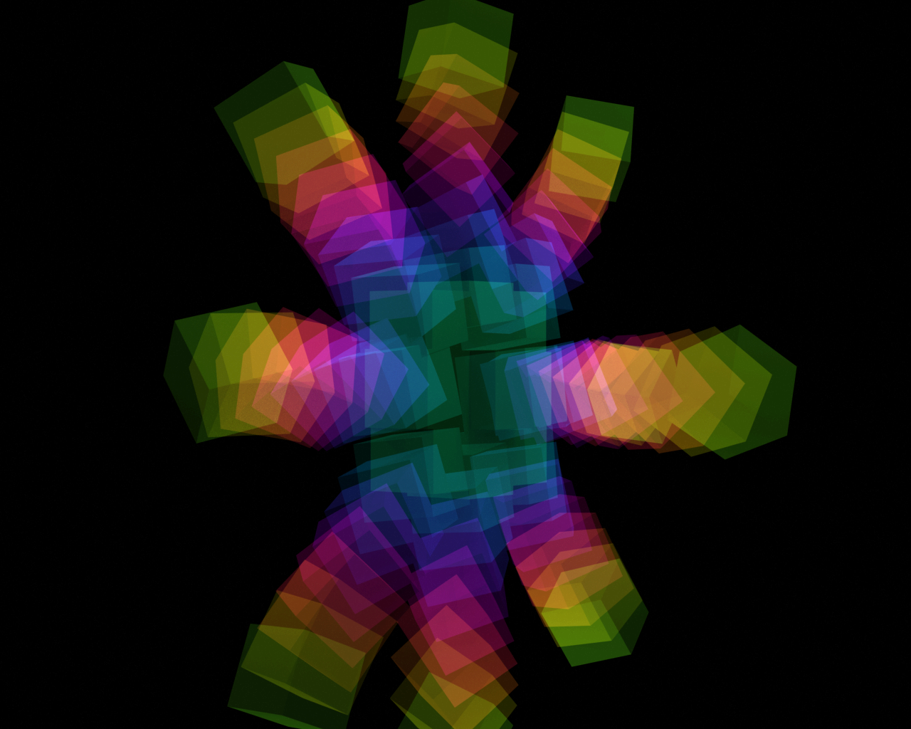
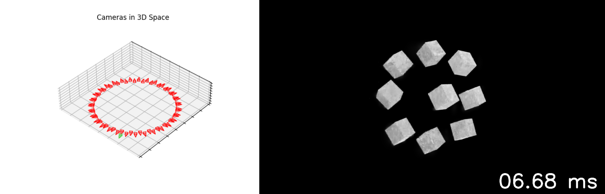
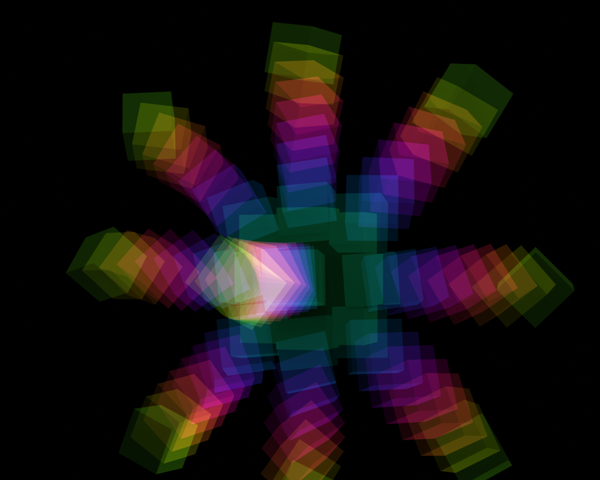
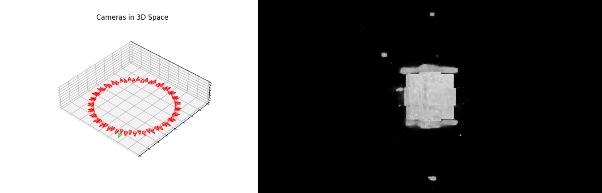
Explosion scene (simulated)
Experimental details: 10 colored strobes, 50 cameras, and nine cubes moving along different trajectories.
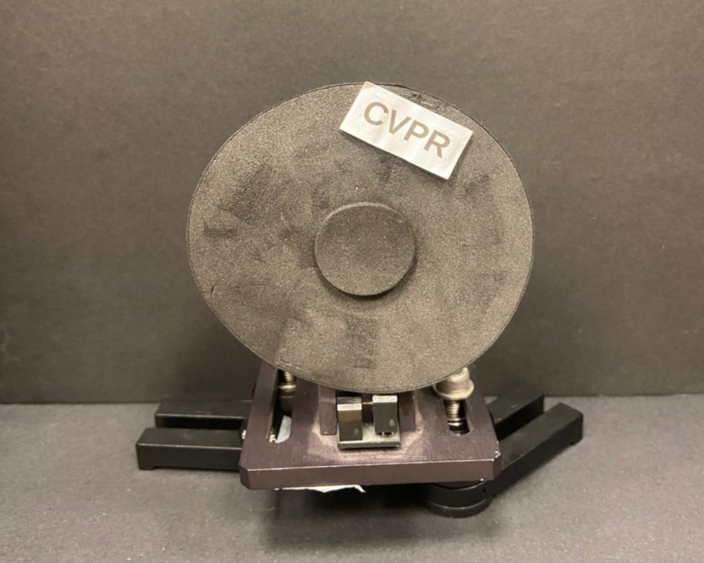
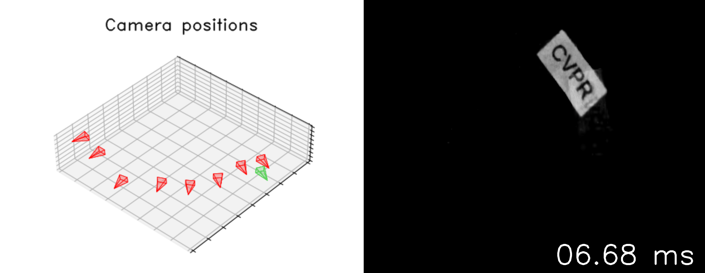
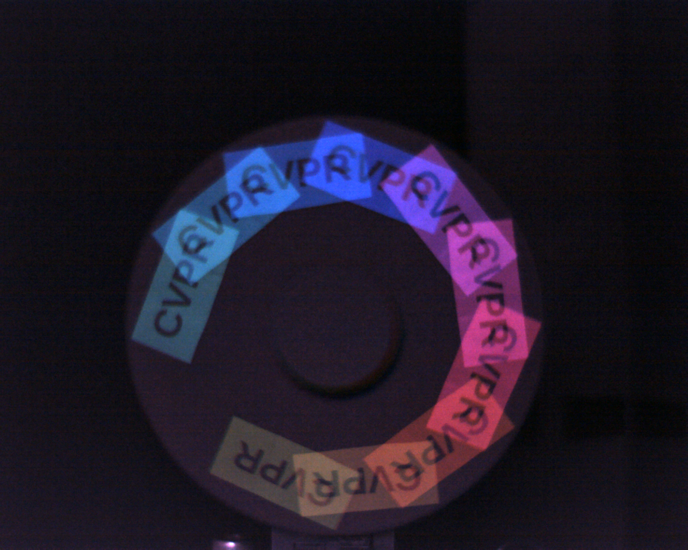
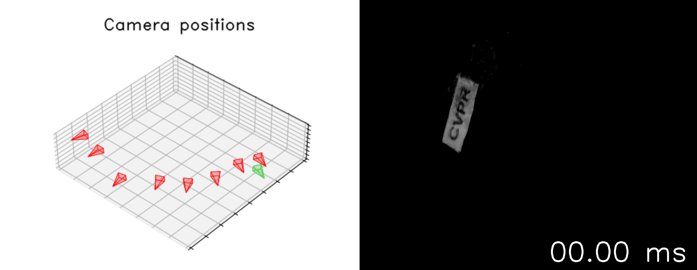
Spinning disk experiment
Experimental details: 10 colored strobes, eight cameras, and one sticker with "CVPR" text.
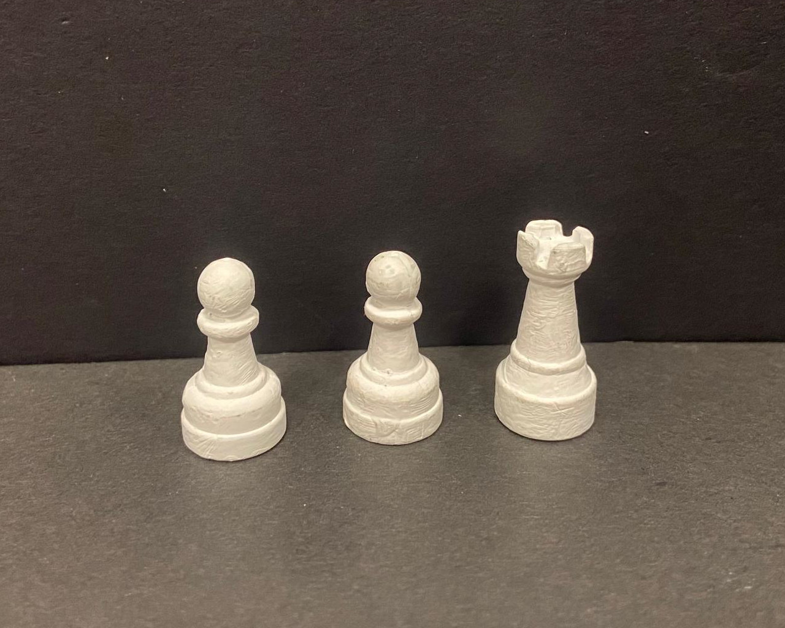
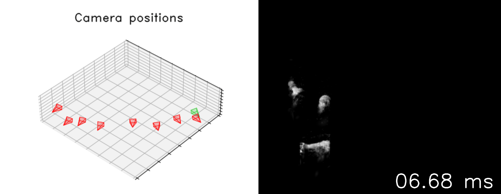
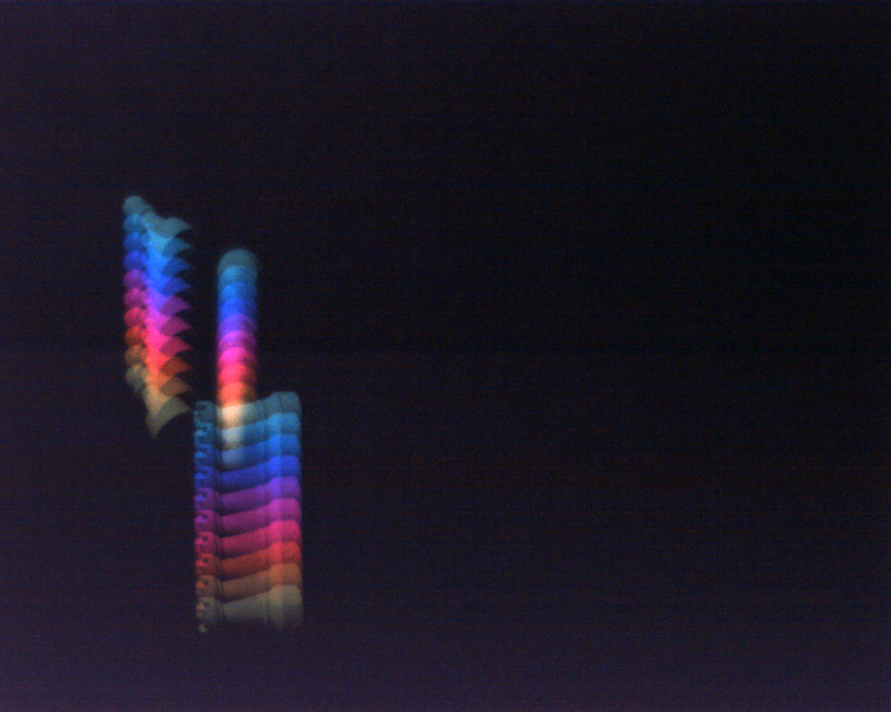
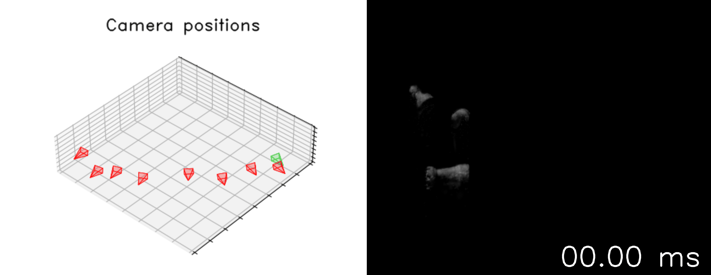
Flying chess pieces (a.k.a. 4D chess)
Experimental details: 10 colored strobes, eight cameras, and three chess pieces falling downward.